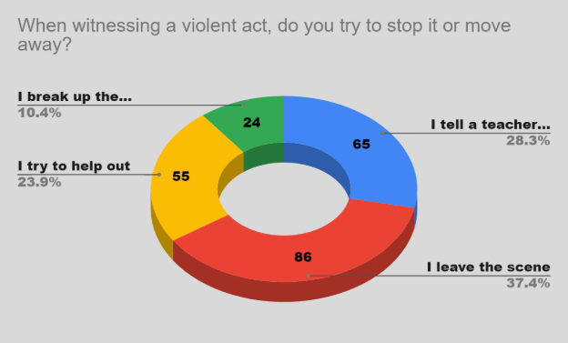
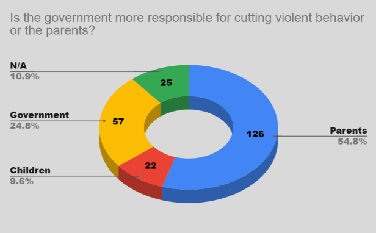

We conducted a field research by creating a survey with questions related to people's understanding and views on violence in the schools. In order to get the best results, we picked people who were of high school age or older, who we thought were in school, just graduated or had some sort of prior knowledge. Our sample focused on parents, students, and teachers because they are the biggest part of schools and most affected by the violence.
In total, we distributed 230 surveys. We noticed that the majority of our sample, 106 respondents, didn't know any of the current laws and programs that attempt to prevent immoral behavio.

This chart shows how people tend to react when they see acts of violence. According to the results, 37.4% of people tend to leave the scene in fear of getting in trouble or not wanting to be harmed in any way. Some people, 28.3%, follow normal procedures taught to them in school and possibly at home which is to inform an adult and not get engaged. Based on this, there is a need to teach the most effective responses to acts of violence in order to provide safety to the environments for students and staff to live with tranquility.

About 54.8% of the 230 total respondents said that the parents are the most responsible for the possibility of cutting violence. However, a smaller number, 24.8%, reported that the government is responsible for stopping school violence. This means that people strongly believe that the parents have the most influence in a student’s life.